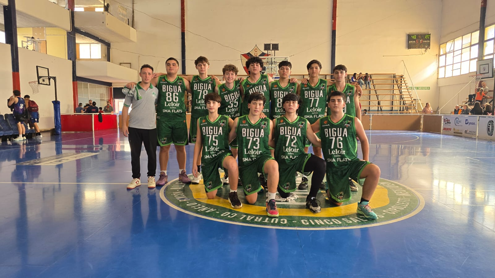
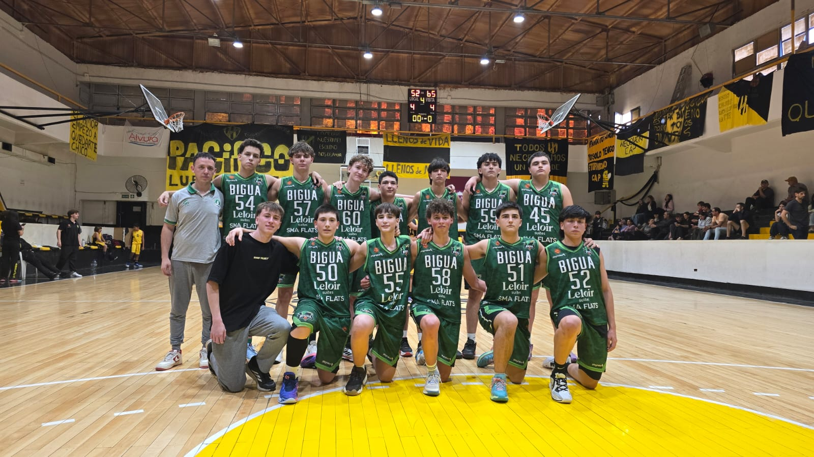

El basket es probablemente el deporte que mas tiempo e echo en mi vida y al que mas cariño le tengo, arranque jugando cuando tenia 6 años en el club Bigua ya que quedaba medianamente cerca de mi casa, en ese club estuve muchos años y tuve muchos profesores distintos. Mas o menos cuando tenia 12 u 11 años arranco la pandemia por lo que estvue un buen tiempo sin poder entrenar, despues de que termine la pandemia retome un año pero luego por cuestiones del colegio secundario decidi dejar para poder enfocar un poco mas de tiempo en el colegio.


despues de haber dejado basket decidi probar otro tipo de deportes asi que me incribi en un gimnnasio de artes marciales llamado dojo serpiente, en el estuve 2 años practicando clases de KickBoxing y un poco de Muai Tai. Llegue a participar de algunos seminarios con Cristian "Serpiente" Bosch un ex campeon mundial de Kick. A pesar de que este sea un deporte que me entretenia muchisimo debido a que en el secundario debia empezar a ir al turno vespertino tuve que dejar por la diferencia de horarios aunque en un futuro tendria ganas de poder retomar
*no tengo fotos :( *
Hice este deporte el año pasado, cuando arranque el turno vespertino el unico horario libre que tenia era a la mañana y como la mayoria de deportes son a la tarde despues de las 18hs no tenia muchas mas opciones, asi que probe para ver que onda. Hice todo un año y aunque no era un deporte que me gustara mucho el lado positivo era que me quedaba muy cerca de mi casa asi que no tenia que hacer un gran viaje para ir
Es el deporte que actualmente estoy haciendo, nunca fui un gran fanatico pero a medida que voy dia tras dia me va gustando un cada vez mas. Tal vez no es parecido a los otros deportes que hice ya que eran por ahi un poco mas aerobicos pero con tal de mantenerme en forma algo tengo que hacer y creo que el gimnnasio es el que mas me va a ayudar a conseguir un buen fisico
*tampoco tengo fotos jaja*